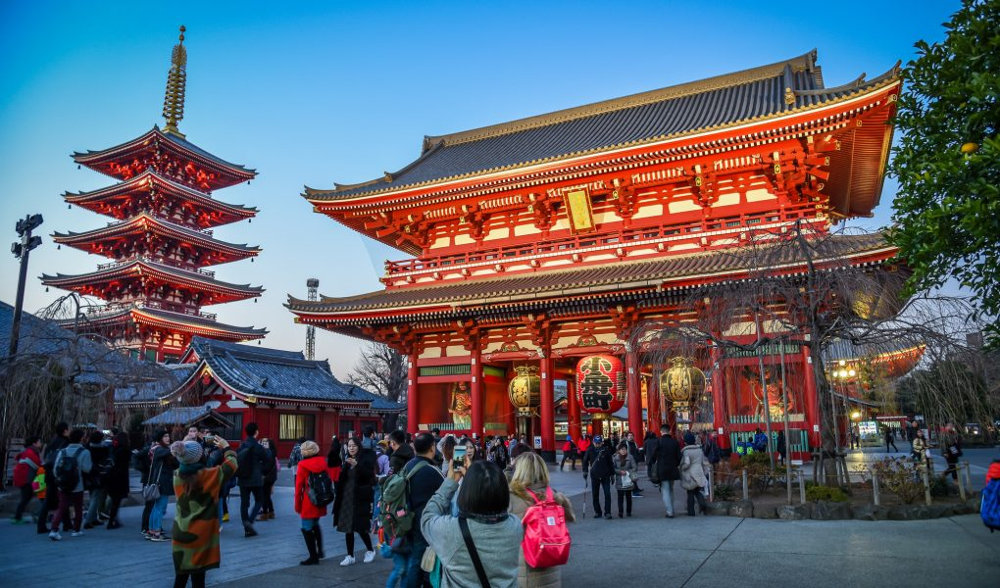
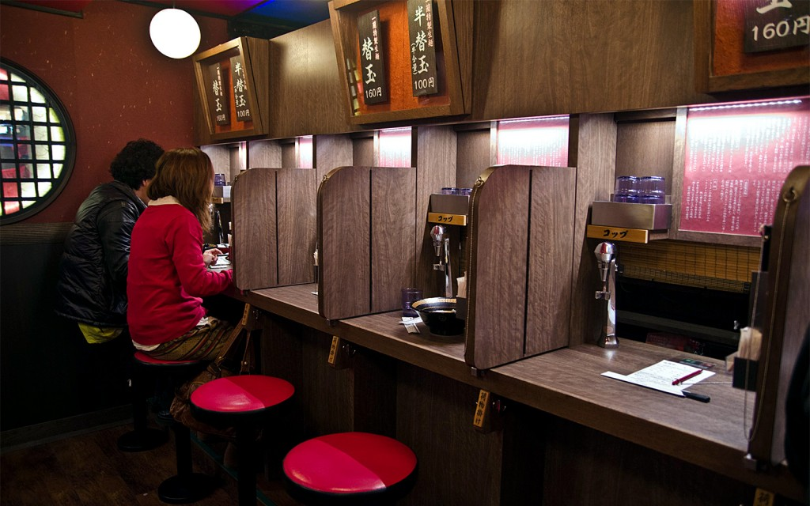

Tokyo
Things to do:
- Visit the Tokyo Skytree
- Checkout the Sensō-ji Temple 
- Placeholder

At over 2000 feet tall, the Tokyo Skytree is a great place to visit if you want a stunning 360 degree view of the city.
One of the oldest Buddhist Temples in Tokyo, the Senso-ji temple is a place of significant Japanese history.
Places to eat:
- Ichiran 
- Placeholder
- Placeholder
A famous chain known for their booth-styled seating where there are dividers between patrons (so you can focus solely on the flavor!), Ichiran is a fantastic place to get a taste of authentic Tonkotsu (Pork Broth) ramen.